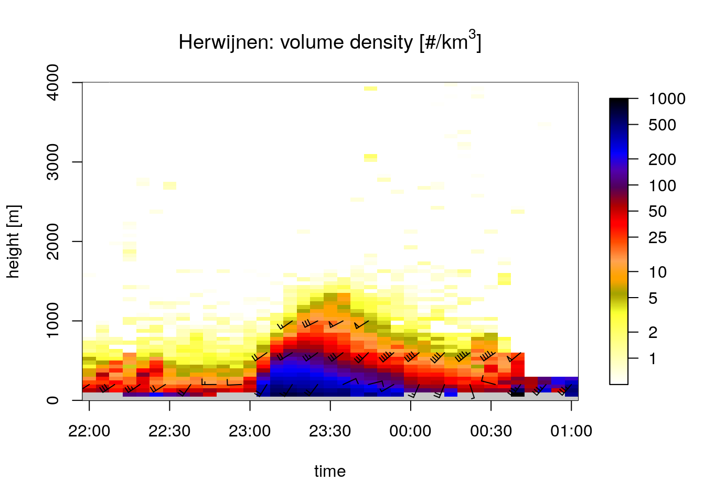
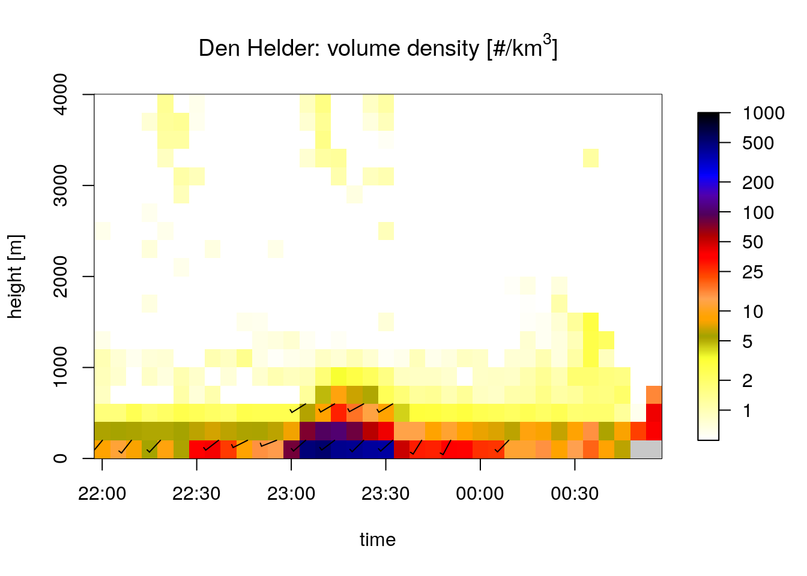
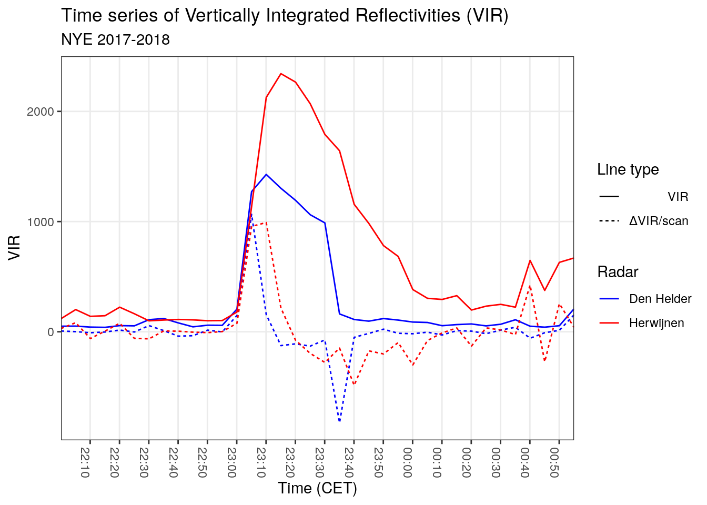

1 Selecting firework take-off moment
For this study we select the moment of ‘en masse’ take-off of birds at the turn of the year. To make sure birds are still fairly ‘close’ to the take-off habitat, we therefore pick the moment where the increase in VIR (Vertically Integrated Reflectivity) is the highest. Based on experience, one would expect this to occur between 00:05 and 00:15 on January 1st, as people tend to light the fireworks right after they have shared New Year’s wishes with each other.
1.1 Setting up the processing environment
We use vol2bird included in the bioRad package (Dokter et al. 2019) to calculate the vertical profiles of reflectivity, from which we determine the exact take off moment of birds. This implies we assume birds take to the skies everywhere simultaneously, but that seems a realistic assumption given that the lighting of fireworks is synchronised by the local time, rather than the time of sunset/sunrise.
1.2 Calculate the vertical profiles
We calculate vertical profiles for the period between December 31st, 2017 22:00 and 01:00 UTC on January 1st, 2018, which corresponds with 23:00 til 02:00 local Amsterdam time (UTC + 1). It is not necessary to generate so many vp files, but it gives a better temporal overview if we add some ‘temporal padding’ around the fireworks event.
Beware: to calculate the vertical profiles, a running instance of Docker is required. This code chunk will only run in full-reproduction mode.
fireworks_scans <- Sys.glob(file.path("data/raw/pvol/fireworks-2017-2018", "*_ODIM.h5"))
cat("Files left to process: ", length(fireworks_scans), "\n")
i = 1
for (scan in fireworks_scans) {
if (i %% 5 == 0) {
cat(i, "... ")
}
vpfile_out <- sub("raw/pvol/fireworks-2017-2018", "processed/vp/fireworks-2017-2018", scan)
try(calculate_vp(scan, vpfile = vpfile_out, verbose = FALSE, mount = dirname(fireworks_scans[1])))
i = i + 1
}1.3 Generate time series of vertical profiles
We can now generate a time series of vertical profiles and plot the bird densities to get an idea of what was going on during NYE of 2017-2018.
fw_hrw_vpts <- Sys.glob(file.path("data/processed/vp/fireworks-2017-2018", "*NL62*")) %>%
read_vpfiles() %>%
bind_into_vpts() %>%
regularize_vpts(interval = "auto")## projecting on 300 seconds interval grid...fw_dhl_vpts <- Sys.glob(file.path("data/processed/vp/fireworks-2017-2018", "*NL61*")) %>%
read_vpfiles() %>%
bind_into_vpts() %>%
regularize_vpts(interval = "auto")## projecting on 300 seconds interval grid...start <- as.POSIXct("2017-12-31 22:00:00")
end <- as.POSIXct("2018-01-01 01:00:00")
indexes_hrw <- which(fw_hrw_vpts$datetime >= start & fw_hrw_vpts$datetime <= end)
indexes_dhl <- which(fw_dhl_vpts$datetime >= start & fw_dhl_vpts$datetime <= end) # Should mostly be identical
title_hrw <- expression("Herwijnen: volume density [#/km"^3 * "]")
title_dhl <- expression("Den Helder: volume density [#/km"^3 * "]")
plot(fw_hrw_vpts[indexes_hrw], main = title_hrw)

Both plots for Herwijnen and Den Helder show exactly what we would expect: fairly low densities of birds aloft leading up to midnight (23:00 CET), then suddenly a strong increase of birds right after midnight. For Herwijnen this peak is much more pronounced than for Den Helder, probably due to the different surroundings of the radar. As vol2bird only takes into account rangegates within 5-35km of the radar, in the case of Den Helder this contains a lot more sea surface, from which fewer birds can be expected to take off than from land.
1.4 Identifying moment of take-off
We integrate the time series of vertical profiles, so we can calculate the vir derivatives and determine in what volume scan birds really take to the skies for each radar separately.
integrated_hrw <- integrate_profile(fw_hrw_vpts)
integrated_dhl <- integrate_profile(fw_dhl_vpts)
integrated_hrw$vir_deriv <- c(NA, diff(integrated_hrw$vir, 1))
integrated_dhl$vir_deriv <- c(NA, diff(integrated_dhl$vir, 1))
integrated_hrw$radar <- "Herwijnen"
integrated_dhl$radar <- "Den Helder"
integrated <- rbind(integrated_hrw, integrated_dhl)
integrated_l <- integrated %>%
pivot_longer(-c("datetime", "radar"), names_to = "variable", values_to = "value") %>%
filter(variable == "vir" | variable == "vir_deriv") %>%
filter(datetime >= start & datetime <= end)
max_vir_deriv <- integrated_l %>%
group_by(variable, radar) %>%
filter(variable == "vir_deriv") %>%
summarize(max_value = max(value), datetime = datetime[which.max(value)]) %>%
arrange(radar) # Sort so order remains the same
theme_set(theme_bw())
ggplot(integrated_l, aes(x = datetime)) +
geom_line(aes(y = value, colour = radar, linetype = variable)) +
scale_x_datetime(breaks = "10 min", date_labels = "%H:%M", expand = c(0, 0)) +
scale_color_manual(values = c("blue", "red")) +
scale_linetype_discrete(name = "Line type", labels = c("VIR", expression(paste(Delta,"VIR/scan")))) +
labs(title = "Time series of Vertically Integrated Reflectivities (VIR)",
subtitle = "NYE 2017-2018",
x = "Time (CET)",
y = "VIR",
colour = "Radar",
linetype = "Linetype") +
theme(axis.text.x = element_text(angle = -90),
panel.grid.minor = element_blank())
The plot shows \(\Delta VIR/{scan}\) peaks earlier for the Den Helder radar than for Herwijnen, but both at roughly the same level of 1066 and 991 respectively.
We can now identify which scans ‘contain’ the moment of take-off. The datetime values correspond with the start times of the scans and the filenames of the polar volume files.
| radar | max_value | datetime |
|---|---|---|
| Den Helder | 1066.0071 | 2017-12-31 23:05:04 |
| Herwijnen | 991.1317 | 2017-12-31 23:10:04 |
pvol_folder <- "data/raw/pvol/fireworks-2017-2018/"
hrw_dt_str <- strftime(max_vir_deriv[[2, 4]], format = "%Y%m%d%H%M")
dhl_dt_str <- strftime(max_vir_deriv[[1, 4]], format = "%Y%m%d%H%M")
pvol_hrw_path <- paste(pvol_folder, "RAD_NL62_VOL_NA_", hrw_dt_str, "_ODIM.h5", sep = "")
pvol_dhl_path <- paste(pvol_folder, "RAD_NL61_VOL_NA_", dhl_dt_str, "_ODIM.h5", sep = "")
save(pvol_hrw_path, pvol_dhl_path, file = "data/processed/pvol_selection.RData")So we will continue using the following files in this study:
- Herwijnen:
RAD_NL62_VOL_NA_201712312310_ODIM.h5 - Den Helder:
RAD_NL61_VOL_NA_201712312305_ODIM.h5